ZION BUBBLE GLAMPING
BLACK
FRIDAY
Glamping na natureza, a dois.
BLACK FRIDAY
·
ZION

BLACK FRIDAY
ZION
Condições especiais
de
Black Friday
para
viver tudo isso.
Reserve pelo link da bio
@zionbubble
Por tempo limitado